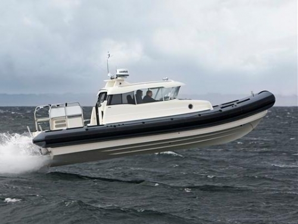
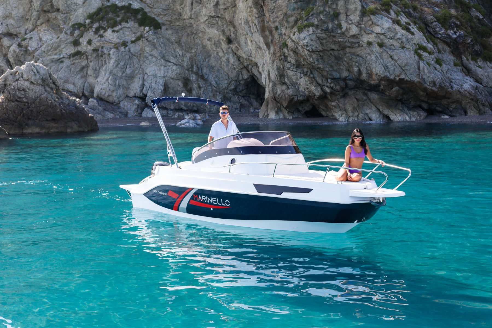
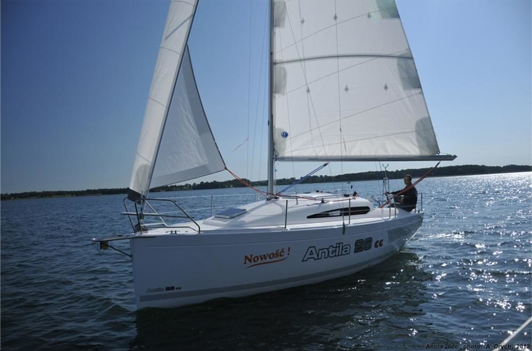

Łodzie typu RIB to jedne z najbezpieczniejszych jednostek pływających, które wykorzystywane są przede wszystkim przez służby ratunkowe, straż pożarną, wojsko i policję. Ich wyjątkowa konstrukcja sprawia, że z powodzeniem znalazły zastosowanie również w użytku cywilnym. Często są one wykorzystywane podczas różnego rodzaju wydarzeń na wodzie czy eventów rekreacyjnych, ponieważ dostarczają wielu niezapomnianych wrażeń. W naszej ofercie można znaleźć motorówki RIB, które sprawdzają się w użytku profesjonalnym, a dzięki odpowiedniemu zaaranżowaniu ich pokładu, sprawdzą się również w użyciu rekreacyjnym.

Łódź motorowa , stosunkowo mała jednostka pływająca napędzana silnikiem spalinowym lub elektrycznym. Łodzie motorowe różnią się rozmiarem – od miniaturowych jednostek przeznaczonych do przewozu jednej osoby po pełnomorskie jednostki o długości 30 metrów (100 stóp) lub większej. Większość łodzi motorowych może jednak pomieścić maksymalnie sześciu pasażerów. Łodzie motorowe są wykorzystywane rekreacyjnie do pływania po wodzie (żeglugi) oraz do uprawiania sportów takich jak wędkarstwo, polowanie na kaczki, pływanie, nurkowanie i narciarstwo wodne.

Jacht żaglowy (ang. sailing yacht) często skrótowo oznaczany s/y lub s. y. (od angielskiego nazewnictwa) – jednostka pływająca wykorzystywana do celów sportowo-turystycznych, której głównym lub jedynym napędem są żagle. Podział na żaglówki, jachty czy żaglowce nie jest ostry i jedynie zwyczajowy.